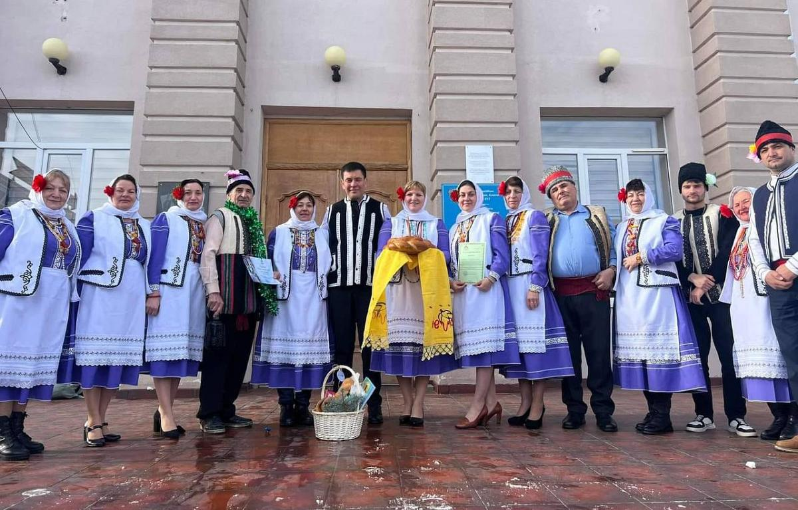
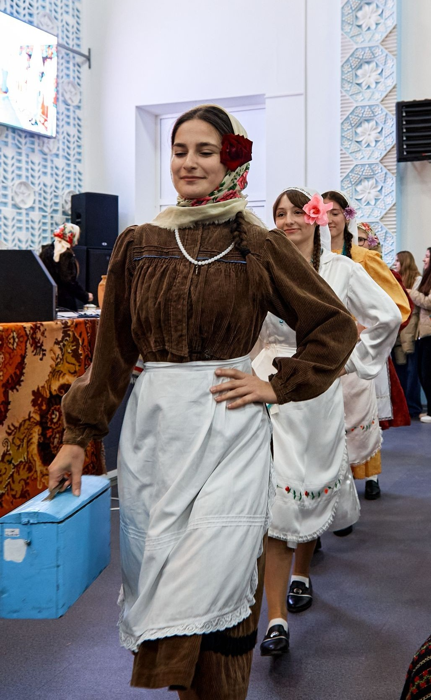

Фестиваль «Sevda Dalgaları» – 2025
📅 Дата: 12 октября 2025
📍 Место: с. Казаклия
Описание события
В селе Казаклия состоялся X Международный фольклорный фестиваль «Sevda Dalgaları», посвящённый сохранению народных традиций и гагаузского культурного наследия.
В фестивале приняли участие более 30 коллективов из Гагаузии, Молдовы и Украины. В течение дня гости могли познакомиться с песнями, танцами и традициями разных народов.
Особое внимание привлекло дефиле национальных костюмов, в котором приняли участие старшеклассницы лицея.
✨ Одной из участниц дефиле стала ученица и разработчик сайта — Ксения Собор, достойно представившая культурное наследие.
Значение мероприятия
Фестиваль объединяет разные народы, способствует сохранению традиций и передаче культурного наследия молодому поколению.
Такие события помогают формировать уважение к культуре, истории и национальной идентичности.
🌍 Gagauz kultura hem adetleri
Gagauz halkı – o bir halk, angısının var zengin ruhu hem açık ürää. Onun var büük sevgisi diil sade ana tarafına, ama dedelerdän kalma ayozlu adetlerä da. Onnar da herbir halkın kulturasının temeli, ocaa.
Goda adeti (pomolvka) – bu gençlerin ayleleri arasında yapılan eski bir gelenektir. Bu vakıtta aylelär tanışêr.
Stevonozluk fistannarı – bu gelin giimneridir. Stevonozluk giimnerinä girärdi: incä dikili gölmek, düün fistanı – ‘stevonozluk’, taa çoyu kerä dikili atlastan açık-maavi yada açık-eşil renktä; fıta açık-moor renktä.
Paskellä – gagauzların en büük yortularından birisidir. Bu gündä insannar kliseyä gider, olêrlar taa yakın biri-birinä, kutlêêrlar biri-birini hem giderlär musaafirlää. .
Gagauzların halk giimneri – sanaat kulturanın eşsiz bir olayı. Halk giimneri – o halkın canı, onun fikirleri, onun umutları. Aaraştırdıynan rubaları, biz var nica üürenelim hem annayalım o insannarı, angıları yaşadılar üzlӓrlӓn yıl bizdӓn ileri.
Краткое описание гагаузских традиций, представленных в рамках фестиваля.
Фотогалерея события



